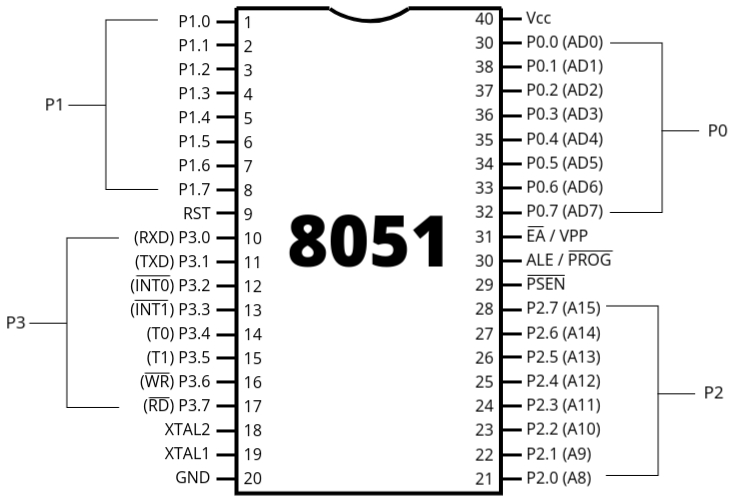
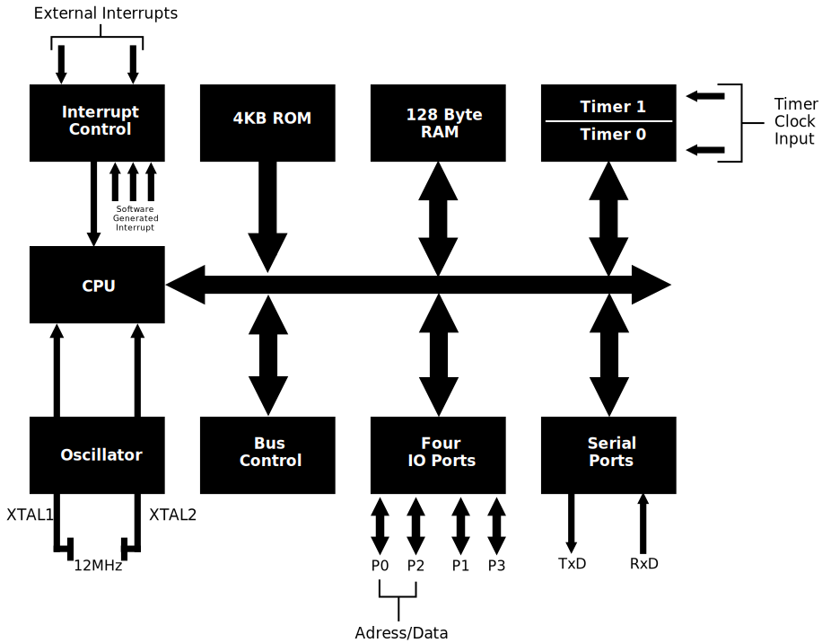

Microcontroller
- A microcontroller is a combination of two words: 'micro' and 'controller'. 'Micro' means small in size, as we measure sizes in micro, nano, etc. Here, 'micro' refers to a measurement unit. 'Controller' means a device that controls the operation of any system. Combining these two words, we can say that a microcontroller is a small device that controls the operation of a particular system. We can also say that a microcontroller is a microprocessor in which all peripheral devices are integrated. That's why we call a microcontroller a 'system on chip' or 'computer on chip'. When all systems, peripherals, and components are integrated into a single chip, we call it a microcontroller.
- Microcontrollers are used in many applications, especially in embedded systems, to perform specific tasks. For example, they are used in washing machines or microwave ovens to control the operation of these devices. In a microwave oven, a microcontroller is used to control the temperature. Microcontrollers are used to perform such specific tasks.
- A microcontroller performs a specific type of task, and we choose its peripherals according to that task.
- A microcontroller includes a CPU, ROM, RAM, timer, counter, oscillator circuit, analog-to-digital converter, digital-to-analog converter, serial I/O ports, interrupt logic, and other functional blocks. All these components are integrated into a single chip. Therefore, we can say that a microcontroller is a complete system. However, we choose peripherals according to the application. For example, the task of a washing machine is to wash clothes. Therefore, we will select all the components required for this task in a microcontroller. The same applies to a microwave oven.
8051 Microcontroller: Introduction and History
- In 1981, Intel introduced an 8-bit microcontroller called the 8051. An 8-bit microcontroller means
it can process 8 bits of data at a time.
- The 8051 microcontroller was a revolutionary product at the time of its release. Its introduction marked a significant milestone in the field of embedded systems, providing a compact and efficient solution for controlling electronic devices.
- It was referred to as a system on a chip because it had a CPU, RAM, on-chip ROM, timers, counters,
and serial I/O ports all on a single chip.
- The term "system on a chip" (SoC) is used because the 8051 integrates multiple components that are typically found in a computer system, all onto a single chip. This includes the central processing unit (CPU) for processing data, random-access memory (RAM) for temporary data storage, read-only memory (ROM) for permanent data storage, timers and counters for managing time-related operations, and serial input/output ports for communication.
- NMOS (N-type Metal-Oxide-Semiconductor) technology was initially used to manufacture 8051 microcontrollers because it offered high-speed performance. However, NMOS technology consumes more power, which is not ideal for battery-powered devices. To address this, the industry shifted to using CMOS (Complementary Metal-Oxide-Semiconductor) technology, which is more energy-efficient and extends the battery life of portable devices.
- It is widely used in embedded systems, consumer electronics, automotive systems, robotics, and
security cameras.
- The versatility and reliability of the 8051 microcontroller make it an ideal choice for a wide range of applications. In embedded systems, it provides precise control over various electronic devices. In consumer electronics, it helps manage functions in devices like washing machines and microwave ovens. In automotive systems, it is used for engine control, and in robotics, it provides control over robotic movements. Security cameras use 8051 microcontrollers for image processing and data handling.
- Microcontroller-based systems, such as those using the 8051, are compact in size because they consolidate multiple functions onto a single chip. This compactness makes the devices easier to handle and integrate into various products.
Difference Between Microprocessor and Microcontroller
Microprocessors and microcontrollers are fundamental components in the field of embedded systems and computing.

Features of 8051 Microcontroller
The 8051 microcontroller is widely used in embedded systems due to its numerous features and versatility. This transcript outlines its key features and applications.
- Complete Computer System on a Single Chip
- Description: The 8051 microcontroller is considered a complete computer system on a single chip.
- Components: It includes a CPU, RAM, ROM, serial ports, parallel ports, interrupts, and timers.
- Limitations: Although it’s a complete system, it is not as powerful as a typical computer, suitable for low-scale applications.
- Clock Speed
- Operating Speed: 8051 operates at a speed of 12 MHz.
- Crystal Oscillator: A crystal oscillator is connected to provide a 12 MHz clock frequency.
- Arithmetic Logic Unit (ALU)
- ALU Size: It has an 8-bit ALU.
- Functionality: It can perform 8-bit arithmetic and logical operations in a single machine cycle.
- Data Lines
- Data Line Size: The microcontroller has 8-bit data lines.
- Memory Exchange: It can exchange 8 bits of data with memory in a single machine cycle.
- Harvard Architecture
- Architecture: 8051 follows the Harvard architecture.
- Memory Separation: Separate memory for program (stored in ROM) and data (stored in RAM).
- Example: In a temperature control program, the program is stored in ROM and the temperature data in RAM.
- I/O Ports
- Number of Ports: Four I/O ports.
- Port Size: Each port is 8 bits.
- Interfacing: Can be used for interfacing peripherals like keyboards, displays, stepper motors, LEDs, and switches.
- Bi-directional: All I/O ports are bi-directional.
- On-chip ROM and RAM
- Internal ROM: 4 KB of internal ROM.
- External ROM: Can interface up to 64 KB of external ROM.
- Internal RAM: 128 bytes of internal RAM.
- External RAM: Can interface up to 64 KB of external RAM.
- I/O Ports
- Number of Ports: Four I/O ports.
- Port Size: Each port is 8 bits.
- Interfacing: Can be used for interfacing peripherals like keyboards, displays, stepper motors, LEDs, and switches.
- Bi-directional: All I/O ports are bi-directional.
- Serial Communication
- Communication Types: Supports both synchronous and asynchronous serial communication.
- Pins: Uses TDX and RDX pins for serial communication.
- Timers
- Number of Timers: Two 16-bit timers.
- Applications: Used for delay generation and as counters in industrial applications.
- Interrupts
- Number of Interrupts: Five different input interrupts (two hardware and three software interrupts).
- Features: All interrupts are vector interrupts with well-defined priorities, which can be changed via programming.
- Power Saving Modes
- Modes: Two power saving modes - Idle mode and Power down mode.
- Use Case: Ideal for battery-operated embedded systems like remote controls.
- Address Lines
- Address Line Size: 16-bit address lines.
- Memory Interface: Can interface 64 KB of external ROM and RAM simultaneously due to different control signals for ROM and RAM.
- Efficiency
- Advantages: Saves cost and power, makes the circuit compact, and is efficient for small-scale applications.
Pin Diagram of 8051 Microcontroller
- The 8051 microcontroller is available in a 40-pin Dual Inline Package (DIP). DIP refers to a type of packaging for integrated circuits (ICs), where the IC is protected and can be easily handled, assembled onto a Printed Circuit Board (PCB), and protected from damage. Various packaging types include SIP (Single Inline Package), CDIP (Ceramic Dual Inline Package), ZIP (Zigzag Inline Package), among others. Each package type has different configurations, which refer to the spacing between pins and the rows of pins. These configurations are standardized to ensure compatibility and protection of the IC.
- The 8051 microcontroller, being a DIP IC, has 40 pins. These pins are essential for connecting the microcontroller to other components in a circuit.
- The 8051 microcontroller features four 8-bit bidirectional I/O ports named Port 0, Port 1, Port 2, and Port 3. Each port consists of 8 pins, and they function as bidirectional I/O ports, meaning they can operate as both input and output ports. Let’s discuss the function of each pin:
- Port 0 (P0.0 to P0.7): Port 0 serves as an 8-bit bidirectional I/O port. It can
also
function as a multiplexed address and data bus during external memory access.
- Input Function: When configured as an input port, Port 0 can receive data from external devices. For example, if a sensor is connected to Port 0, it can read sensor values.
- Output Function: When configured as an output port, Port 0 can send data to external devices. For instance, if an LED is connected to Port 0, it can control the LED by sending signals.
- General-Purpose I/O: Port 0 can also be used for general-purpose input/output operations. For example, it can be used to interface with buttons for input or drive motors for output.
- Port 1 (P1.0 to P1.7): Port 1 is an 8-bit bidirectional I/O port. Unlike Port
0, it does
not have any dual function, making it solely an I/O port.
- The Port 1 pin of the 8051 microcontroller is a general-purpose I/O (Input/Output) port used for connecting external devices and peripherals.
- Input: It can be configured to read digital signals from external sensors, switches, or other devices. For example, a button connected to Port 1 can be used to input user commands.
- Output: It can also be used to send digital signals to control external devices such as LEDs, relays, or displays. For instance, connecting an LED to Port 1 allows the microcontroller to turn the LED on or off.
- Port 2 (P2.0 to P2.7):The Port 2 pin on the 8051 microcontroller is a
bidirectional I/O port that can be used for various purposes.
- Input: When configured as an input, Port 2 can be used to read data from external devices or sensors connected to it.
- Output: When configured as an output, Port 2 can send data or control signals to external devices or components.
- Communication: Port 2 can also be used for communication purposes, such as interfacing with other microcontrollers, sensors, or communication modules.
- Port 3 (P3.0 to P3.7): Port 3 is an 8-bit bidirectional I/O port with
additional
functionalities. Each pin can be used for specific alternate functions like serial
communication, external interrupts, and timer/counter inputs.
- The Port 3 pin of the 8051 microcontroller is a versatile I/O (Input/Output) port that can be used for various purposes.
- It can function as a general-purpose I/O port, allowing you to connect external devices such as sensors, LEDs, or switches for input and output operations.
- Some pins within Port 3 have additional functions such as UART (Universal Asynchronous Receiver-Transmitter) communication for serial data transfer.
- Port 3 pins may also be used for interfacing with external memory or other peripherals, depending on the specific requirements of your project.
- Pin 9 (RST): This pin is used to reset the microcontroller. A high signal on this pin for at least two machine cycles will reset the microcontroller.
- Pin 18 and 19 (XTAL1 and XTAL2): These pins are connected to an external crystal oscillator to provide the clock frequency for the microcontroller’s operation.
- Pin 20 (GND): This pin is connected to the ground of the power supply.
- Pin 31 (EA/ VPP):
- EA (External Access): Allows the 8051 to access external memory for program execution. For example, if a program is too large to fit into the internal memory of the microcontroller, EA enables it to fetch instructions from an external memory chip.
- VPP (Programming Voltage): Provides the necessary voltage for programming the microcontroller's memory. When programming the 8051, VPP ensures that the correct voltage levels are applied to write data into the memory cells.
- Pin 40 (Vcc): This pin is connected to the positive supply voltage.
- ALE/PROG:
- ALE (Address Latch Enable): ALE is used to latch the address from the data bus when interfacing with external memory or devices. For example, when accessing a memory location, ALE ensures that the correct address is latched for data retrieval or storage.
- PROG (Program): PROG is involved in programming the 8051 microcontroller. It is used during the programming process to enable the microcontroller to receive and store program instructions. For instance, when uploading a new program to the microcontroller, PROG enables the device to enter programming mode and accept the new instructions.
- PSEN:
- PSEN is a signal in the 8051 microcontroller that enables the program memory for reading instructions.
- Example: When the microcontroller needs to fetch an instruction from its program memory, it activates the PSEN signal to enable the memory for reading. This allows the microcontroller to retrieve and execute the next instruction in the program flow.
Block Diagram of 8051 Microcontroller
- The CPU (Central Processing Unit) is the core component of the 8051 microcontroller. It is connected to an oscillator that connects to an external crystal between terminals XTAL1 and XTAL2. This crystal has a frequency of 12 MHz. The entire circuit functions based on this frequency. The crystal frequency provided is crucial for the microcontroller's operation as the CPU executes instructions in sync with the clock.
- The CPU contains an Arithmetic and Logic Unit (ALU) that executes instructions. Instructions are processed sequentially in sync with the clock signal, and the ALU performs arithmetic and logical operations required by the instructions.
- The CPU is also connected to an interrupt control unit. The 8051 microcontroller has a total of 5 interrupts: 2 external hardware interrupts and 3 software-generated interrupts. There are two timers, Timer 0 and Timer 1, which can trigger interrupts when they overflow. Additionally, there is one interrupt related to serial communication. The interrupt control unit manages the priority and execution of these interrupts by the CPU.
- The 8051 microcontroller is based on the Harvard architecture, which means it has separate memory spaces for program and data. The program memory is typically stored in ROM (Read-Only Memory), and the data memory is stored in RAM (Random Access Memory).
- The microcontroller has 4KB of on-chip ROM, with an address range from 0000H to 0FFFH, to store the program. It also has 128 bytes of on-chip RAM for data storage.
- For external interfacing, the 8051 has an 8-bit data bus and a 16-bit address bus. The bus control unit handles the address and data lines. The microcontroller has four I/O ports (Port 0, Port 1, Port 2, and Port 3) with multiple functionalities:
- Port 0: It serves as an 8-bit bidirectional I/O port and also as a multiplexed address and data bus (AD0 to AD7) for external memory interfacing.
- Port 1: It is an 8-bit bidirectional I/O port without any additional functions.
- Port 2: It serves as an 8-bit bidirectional I/O port and also provides the higher-order address bus (A8 to A15) for external memory interfacing.
- Port 3: It is an 8-bit bidirectional I/O port with additional functionalities:
- Pin 3.0 (RXD): Serial input (receive data)
- Pin 3.1 (TXD): Serial output (transmit data)
- Pin 3.2 (INT0): External interrupt 0
- Pin 3.3 (INT1): External interrupt 1
- Pin 3.4 (T0): Timer 0 external input
- Pin 3.5 (T1): Timer 1 external input
- Pin 3.6 (WR): External memory write strobe
- Pin 3.7 (RD): External memory read strobe
- Serial communication is supported via the serial port, which is integrated into Port 3. This port handles both serial transmission (TXD) and reception (RXD).
- The 8051 microcontroller includes two 16-bit timers/counters (Timer 0 and Timer 1). These timers can operate as counters when provided with an external clock input, and their inputs are also integrated into Port 3.
- The 8051 microcontroller's complete structure includes the CPU, oscillator, interrupt control, program memory (4KB ROM), data memory (128 bytes RAM), 4 I/O ports, and serial communication support. The microcontroller can handle multiple functionalities through its ports and internal units, making it versatile for various applications.
Important parts of 8051 Microcontroller
ALU
The Arithmetic and Logic Unit (ALU) is a part of the CPU. The 8051 microcontroller has an 8-bit ALU responsible for executing instructions along with arithmetic and logical operations. All arithmetic and logical operations inside the CPU are performed by the ALU.
Here are some examples for better understanding:
ADD A, R1: Adds the accumulator A with register R1, and the result is stored in A.CPL P0.3: Complements bit 3 of port 0, demonstrating that the ALU can perform single-bit operations.
Accumulator
The accumulator (A) is an 8-bit register used for most arithmetic and logical operations in the 8051 microcontroller. Examples include:
ADD A, R0: Adds the accumulator A with register R0, and the result is stored in A.ANL A, R1: Performs a logical AND operation between A and R1, and stores the result in A.
B Register
The B register is an 8-bit register dedicated to multiplication and division instructions in the 8051 microcontroller. Examples include:
MUL AB: Multiplies A and B, storing the 16-bit result in A (lower byte) and B (higher byte).DIV AB: Divides A by B, storing the quotient in A and the remainder in B.
Program Counter
- The program counter (PC) is a 16-bit register that points to the address of the next instruction to be executed.
- The 8051 microcontroller follows the Harvard architecture, with separate memory for program (ROM) and data (RAM). The PC automatically increments after each instruction is fetched.
Data Pointer
- The Data Pointer (DPTR) is a 16-bit register used to point to data in RAM.
- It is divided into two 8-bit registers: DPH (higher byte) and DPL (lower byte). The DPTR can also be used as a pointer for a lookup table in ROM.
Stack Pointer
- The stack pointer (SP) is an 8-bit register that holds the address of the top of the stack.
- The stack operates on a Last In, First Out (LIFO) basis. The SP points to internal RAM addresses ranging from 00H to 7FH and is used with push and pop instructions, as well as for subroutine and interrupt handling.
Program Status Word (PSW)
- The Program Status Word (PSW) is an 8-bit register that indicates the status of the program, such as carry, overflow, and other flags.
- The PSW is bit-addressable, allowing bit-by-bit operations as well as operations on the entire register. The PSW flags change after each instruction execution.
Flag Register of 8051 Microcontroller
The flag register, also known as the Program Status Word (PSW), is an 8-bit register used to indicate the status of the processor. The PSW contains flags that represent the result of arithmetic and logical operations. The 8051 microcontroller's flag register is divided into various flags, each serving a specific purpose. Let's discuss each flag with simple examples:
Carry Flag (CY)
- This flag is set if there is a carry out from the most significant bit (MSB) in an arithmetic operation. It is also affected by rotate operations.
-
Example: Addition of two 8-bit numbers resulting in a carry
; A = 1101 0101 (0xD5)
; B = 1001 0011 (0x93)
; A + B = 1 0110 1100 (0x1B8)
; Result = 0110 1100 (0x6C), CY = 1 (carry out from MSB)
Auxiliary Carry Flag (AC)
- This flag is set if there is a carry out from the 4th bit (low nibble) to the 5th bit (high nibble) in an arithmetic operation. It is used in BCD (Binary-Coded Decimal) arithmetic operations.
-
Example: Addition of two BCD numbers
; A = 0000 1001 (0x09)
; B = 0000 0111 (0x07)
; A + B = 0001 0000 (0x10)
; Result = 0001 0000 (0x10), AC = 1 (carry out from low nibble)
Parity Flag (P)
- This flag is set if the number of 1-bits in the accumulator is even. It is cleared if the number of 1-bits is odd. It reflects the parity of the accumulator.
-
Example: Checking the parity of a value
; A = 0000 0011 (0x03, two 1s, even parity)
; P = 1
Overflow Flag (OV)
- This flag is set if there is a signed overflow, i.e., when the result of an arithmetic operation exceeds the range of -128 to +127.
-
Example: Addition causing overflow
; A = 0111 1111 (0x7F)
; B = 0000 0001 (0x01)
; A + B = 1000 0000 (0x80)
; Result = 1000 0000 (0x80), OV = 1 (signed overflow)
General Purpose Flag (F0)
- This is a user-defined flag that can be set or cleared by software. It does not affect the operation of the ALU.
-
Example: Using general-purpose flag F0
; Set flag F0 SETB PSW.5 ; Clear flag F0 CLR PSW.5
Register Bank Select Flags (RS1 and RS0)
- These flags are used to select one of the four register banks (Bank 0, Bank 1, Bank 2, Bank 3) in the internal RAM of the 8051 microcontroller.
-
Example: Selecting Register Bank 2
; Select Register Bank 2
SETB PSW.4 ; RS1 = 1
CLR PSW.3 ; RS0 = 0
; This selects Register Bank 2
Interrupts in 8051
Interrupts play a vital role in microcontroller systems like the 8051, allowing the processor to respond to external events promptly. This lecture delves into the intricacies of interrupts in the 8051 microcontroller, focusing on their types, vector addresses, priority management, and control mechanisms using the IE and IP registers.
Types of Interrupts in 8051:
Interrupts in the 8051 microcontroller help manage tasks efficiently.
- Hardware Interrupts: These interrupts are triggered by external hardware events connected to the microcontroller.
- Example: Imagine an 8051 microcontroller used in a security system. When a motion sensor connected to the microcontroller detects movement, it sends a signal to trigger a hardware interrupt. The microcontroller can then respond immediately to handle the security event, such as sounding an alarm or capturing images.
- Software Interrupts: These interrupts are initiated by software instructions within the program running on the microcontroller.
- Example: In an embedded system application, the software may need to perform periodic tasks such as updating a display or processing user inputs. A software interrupt can be programmed to occur at specific intervals to trigger these tasks. For instance, a software timer interrupt can be set up to update a real-time clock display every second.
Interrupt Service Routine (ISR) Execution:
When an interrupt occurs, the processor suspends the current program execution and jumps to the corresponding ISR location. The ISR handles the interrupt-specific tasks and then returns to the main program using the RETI (Return from Interrupt) instruction. The main program's address is stored on the stack during ISR execution.
Interrupt Enable (IE) Register:
The IE register controls the enable/disable status of interrupts in the 8051 microcontroller. It consists of several bit-addressable flags:
- EA (Enable All): Enables all interrupts when set to 1.
- ES (Enable Serial): Enables the serial communication interrupt (RI/TI).
- ET1 (Enable Timer 1), EX1 (Enable External Interrupt 1), EX0 (Enable External Interrupt 0): Enable specific interrupts individually.
Enabling interrupts allows the processor to respond to external events based on their priority and handling requirements.
Interrupt Priority (IP) Register
The IP register manages interrupt priorities in the 8051 microcontroller. It assigns higher priority to certain interrupts based on bit settings:
- PX1 (Priority for External Interrupt 1), PT1 (Priority for Timer 1), PT0 (Priority for Timer 0), PS (Priority for Serial): Setting these bits to 1 assigns higher priority to the corresponding interrupts.
Controlling Interrupts:
By configuring the IE and IP registers, developers can control interrupt behavior in the 8051 microcontroller. Enabling specific interrupts and assigning priorities facilitate seamless event handling, optimizing system performance in real-time applications.